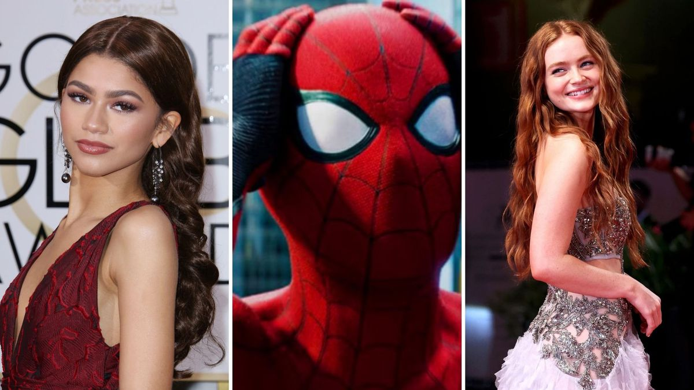

Chefe da Sony classifica Homem-Aranha: Um Novo Dia como “surpreendente” e foge de perguntas sobre despedida
07/02/2026

O CEO da Sony Pictures, Tom Rothman, trouxe novas atualizações empolgantes (e misteriosas) sobre o aguardado quarto filme do Teioso, oficialmente intitulado Spider-Man: Brand New Day.
Em entrevista recente à Variety, o executivo não poupou elogios ao projeto e à direção de Destin Daniel Cretton (conhecido por Shang-Chi).
Os principais destaques da fala de Rothman:
"Surpreendente e Terrífico": Rothman afirmou já ter assistido aos dailies (gravações brutas do dia a dia) e descreveu a produção como um dos filmes mais surpreendentes e incríveis do herói até agora.
A "Despedida" de Tom Holland: Quando questionado se este seria o último filme de Tom Holland como o Homem-Aranha, Rothman foi evasivo e bem-humorado, sugerindo que os jornalistas perguntassem diretamente ao ator: "Na próxima vez que o Tom estiver na linha, pergunte a ele!".
Novo Tom: O filme promete um "recomeço" (soft reboot) após os eventos de No Way Home, focando em uma trama mais urbana e "pé no chão" durante os anos de faculdade de Peter Parker.
O título, inspirado no arco dos quadrinhos "Um Dia Novo", reforça a ideia de que o Peter Parker do MCU finalmente operará sem os recursos da Stark Industries ou a ajuda de seus antigos amigos, que esqueceram sua identidade.